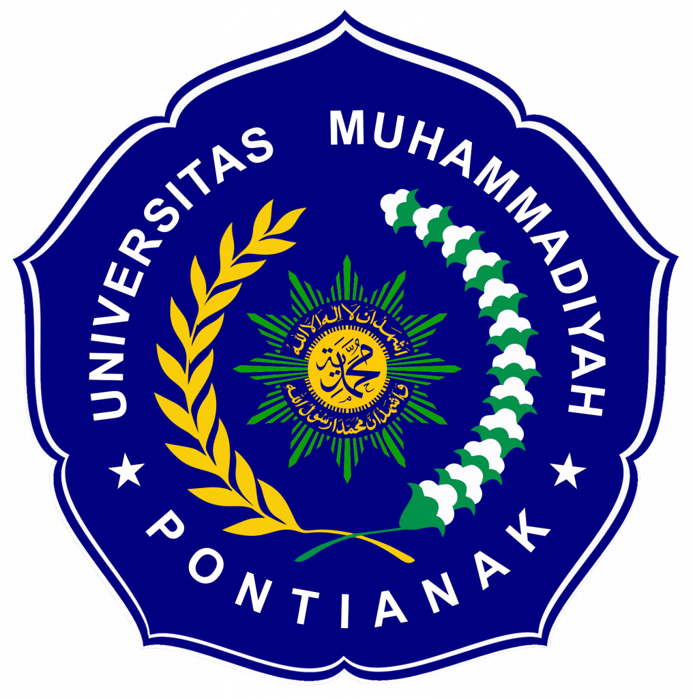

👥 Anggota Kelompok
- Agung Saputra
- Muhammad Borneo Satria Prawira Putra
- Muhammad Ikhsan
- Mochammad Maril Livio
- Rizki Yuhendra
👨🏫 Dosen Pembimbing
Dosen pengampu: Dedy Susanto, S.Pdi., M.M.
🎓 Kampus
Universitas Muhammadiyah Pontianak

Proyek akhir ini dibuat untuk memenuhi tugas mata kuliah Al-Islam dan Kemuhammadiyahan (AIK). Website ini dikembangkan oleh Kelompok 7 sebagai sarana dakwah digital, yang memadukan nilai-nilai
keislaman dengan teknologi informasi, serta melatih keterampilan dasar dalam pengembangan web menggunakan HTML, CSS, dan JavaScript.